에스네이처 아쿠아 스쿠알란 수분크림 60ml 더블기획 (1+1) · 스킨케어 > 크림
프리셋 ref_preset_2 (레이아웃·타이포·DS) · 색·제품·콘텐츠 = 타겟 · 8/8섹션
소스: https://www.oliveyoung.co.kr/store/goods/getGoodsDetail.do?goodsNo=A000000192782&dispCatNo=90000010009&trackingCd=Best_Sellingbest
프리셋 ref_preset_2 (레이아웃·타이포·DS) · 색·제품·콘텐츠 = 타겟 · 8/8섹션
소스: https://www.oliveyoung.co.kr/store/goods/getGoodsDetail.do?goodsNo=A000000192782&dispCatNo=90000010009&trackingCd=Best_Sellingbest
⚙️ 전체 공정 흐름 (총 421s)
사전 1회 (직렬): URL 스크랩 → 전처리·비전 → 콘텐츠 합성 → 프리셋 분석
① 디렉터21s
→
② 병렬
TT174.1s
DS157.4s
제품시트형태비전+생성
→
③ 병렬
섹션 ×8101~139s
커버223.5s
→
HTML
직렬 = ① 디렉터. 그 뒤 ② TT·DS·제품시트가 동시, ③ 섹션×8·커버가 동시. 임계경로 ≈ 디렉터(21s) → ②(174.1s급) → 커버(223.5s).
🧰 전처리 리소스 (생성에 쓴 재료: TT·DS·제품시트)
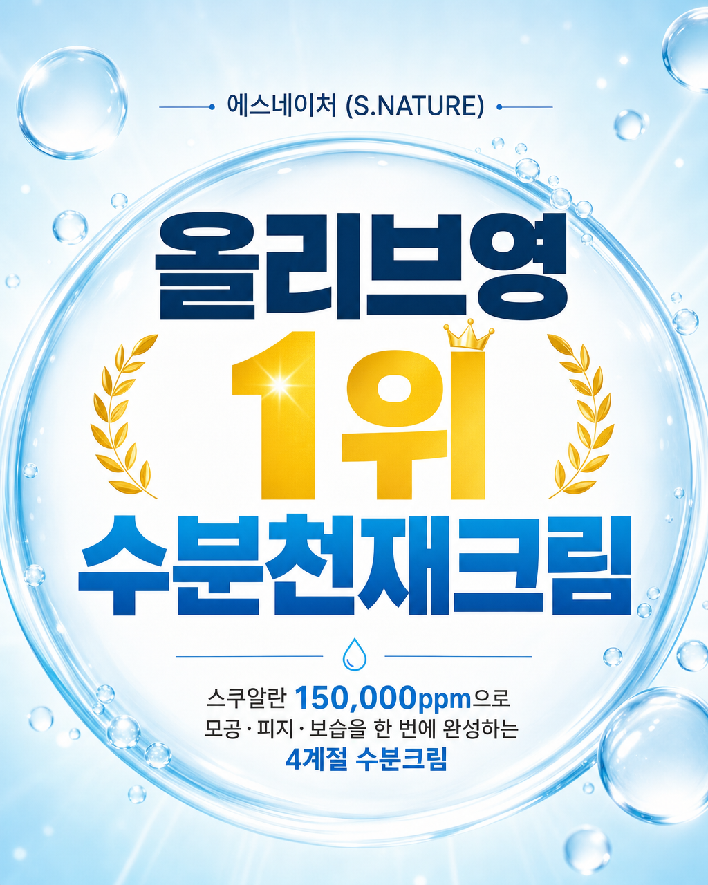
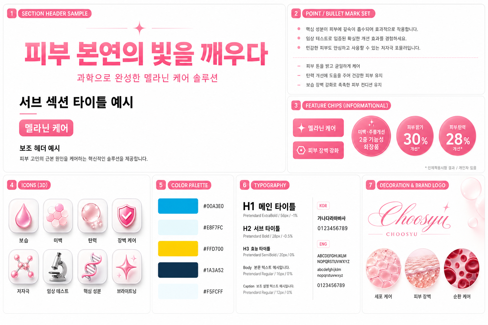

📦 생성 페이로드 (각 컷의 첨부 image_urls + 프롬프트)
TT Title Treatment ✓ 174.1s
첨부 레퍼런스 (페이로드 image_urls, 순서대로)
프롬프트
Create a TITLE TREATMENT typographic lockup (no product photo, typography + minimal decoration only) on this blank canvas. Preset typography style to follow: 주요 헤드라인은 크고 굵은 산세리프 폰트를 사용하여 가독성과 주목도를 높였습니다. 서브 헤드라인과 성분명은 중간 굵기의 산세리프 폰트를 사용하며, 일부 제목은 한영 혼용(예: 'High-performance ingredient', 'Melazero')으로 표기됩니다. 본문 텍스트는 일반 굵기의 산세리프 폰트로 명확하게 정보를 전달합니다. 전체적으로 모던하고 깔끔한 느낌의 폰트 스타일을 유지합니다.. Decorative motifs allowed (subtle): 브랜드 로고는 우아한 스크립트 폰트. 배경 장식으로 투명하고 구형의 연핑크/로즈골드 버블 사용. 성분 설명 옆에는 육각형 세포, 피부 질감, 혈액 세포 등 사실적이고 과학적인 스타일의 클로즈업 이미지를 시각 자료로 활용. 뱃지 내부에 작은 별과 같은 최소한의 기능성 아이콘 사용.. DESIGN SYSTEM — apply these exact recurring design elements (inherited from preset, recolored to product palette): - Section header: 메인 타이틀은 크고 굵은 핑크/골드 그라데이션 또는 단색 핑크로 중앙 정렬. 서브 섹션 타이틀은 중간에서 큰 크기, 굵은 핑크 또는 검정색으로 좌측 정렬. 효능 타이틀은 둥근 핑크색 배경 칩에 흰색 텍스트로 좌측 정렬. 보조 헤더는 작고 보통 굵기, 검정색으로 좌측 정렬. - Point/bullet marks: 작고 미묘한 연핑크 또는 회색 점/대시를 사용하여 목록의 불릿 포인트로 활용. - Dividers: 주요 콘텐츠 블록 간에는 충분한 수직 여백(흰색 공간)을 주로 사용. 섹션 구분으로 미묘한 배경색 전환(예: 연핑크에서 흰색)도 활용. 명시적인 수평선은 주요 섹션 구분선으로 사용하지 않음. - Fonts: 한글/영문 모두 본문과 대부분의 제목에 깨끗하고 현대적인 산세리프 폰트 사용. 제목은 굵게, 본문은 보통 굵기로 대비. 브랜드명(CHOOSYU)은 독특하고 우아한 스크립트 폰트 사용. 메인 타이틀, 서브 타이틀, 본문 텍스트 간에 크기와 굵기의 명확한 계층 구조를 가짐. - Icon/decoration motifs: 브랜드 로고는 우아한 스크립트 폰트. 배경 장식으로 투명하고 구형의 연핑크/로즈골드 버블 사용. 성분 설명 옆에는 육각형 세포, 피부 질감, 혈액 세포 등 사실적이고 과학적인 스타일의 클로즈업 이미지를 시각 자료로 활용. 뱃지 내부에 작은 별과 같은 최소한의 기능성 아이콘 사용. - Badges/price chips: 제품 효능(예: '미백·주름개선 2중 기능성 화장품') 및 임상 결과(예: '30% 개선') 표기에는 핑크색 배경에 흰색 텍스트를 사용한 원형 뱃지 사용. 백분율은 크고 눈에 띄게 표시. 효능 타이틀(예: '멜라닌 케어')에는 핑크색 배경에 흰색 텍스트를 사용한 직사각형/둥근 모서리 칩 사용. 가격 표시는 없음. - Color application structure (keep this structure, remap to product palette): 콘텐츠 영역은 주로 깨끗한 흰색 배경을 사용하며, 부드러운 연한 분홍색을 히어로 섹션이나 시각적 깊이/구분선 생성에 활용. 주요 강조색은 부드러운 채도 낮은 로즈 핑크로, 메인 타이틀 및 주요 헤더 텍스트, 뱃지/칩 배경, 일부 장식 요소, 미묘한 포인트 마크에 적용. 보조 강조색은 로즈골드/구리 메탈릭 광택으로, 제품 패키징 디테일, 때로는 브랜드 로고 텍스트나 미묘한 그라데이션에 사용. 본문 텍스트는 흰색 배경에서 높은 가독성을 위해 짙은 회색 또는 검정색. 핑크색 배경의 강조 텍스트는 흰색. 브랜드명은 로즈골드 또는 핑크색. 흰색 콘텐츠 블록은 부드러운 핑크색 섹션으로 둘러싸이거나 중간에 삽입되며, 주요 정보와 브랜딩은 핑크색 또는 로즈골드로 강조. STYLE RULES: - LAYOUT/TYPOGRAPHY/DECORATION come from the preset template reference(s) — preserve exact composition, positions, typographic style, motifs. - COLORS come from THIS product — recolor everything to: primary #00A3E0, secondary #E8F7FC, accent #FFD700, dark #1A3A52, light #F5FCFF. Do not keep template colors. - PRODUCT FIDELITY: keep the product's REAL form, container type, proportions, and shape from the product reference. NEVER change the container/form factor (a squeeze tube stays a tube, a pump bottle stays a pump, a jar stays a jar). Do NOT stretch, squash, warp, or distort. Natural proportions, clean. - TEXT: Korean only (브랜드/단위/약어만 영어), zero spelling errors, fully legible. - NO COMMERCE UI: this is a product-INTRODUCTION image only. Absolutely NO buttons, NO "구매하기"/"장바구니"/"수량 선택"/CTA, no cart/quantity/checkout widgets, no price-with-buy-button, no 상품정보 commerce table. The shopping platform renders all purchase UI separately — never draw it. - FULL-BLEED: the design FILLS the ENTIRE frame edge-to-edge. NO white side margins, NO letterbox/pillarbox bars, NO empty padding on left/right or top/bottom. The background color/scene extends to all four edges. - STATIC image. Mobile vertical. CONTENT: - Brand: "에스네이처 (S.NATURE)" - Main title: "모공·피지·수분 3중 케어 올리브영 1위 수분천재크림" - Sub copy: "스쿠알란 150,000ppm 고함량 + 8종 히알루론산 복합 보습 끈적임 없이 촉촉한 쫀쫀 크림" VERBATIM KOREAN TEXT — render each string EXACTLY, crisp and fully legible, zero malformed syllables: • 에스네이처 (S.NATURE) • 모공·피지·수분 3중 케어 올리브영 1위 수분천재크림 • 스쿠알란 150,000ppm 고함량 + 8종 히알루론산 복합 보습 끈적임 없이 촉촉한 쫀쫀 크림
결과
DS Design System 시트 ✓ 157.4s
첨부 레퍼런스 (페이로드 image_urls, 순서대로)
프롬프트
Design a clean, polished DESIGN SYSTEM style-guide page (like a brand guideline sheet) on this white canvas. Use GENEROUS whitespace and LARGE, perfectly legible labels. Lay it out as a FEW clearly separated panels — do NOT cram many tiny elements, do NOT stretch or squash any text. Each element fully designed and crisp. Panels (recolored to the product palette): 1) Section header sample — 메인 타이틀은 크고 굵은 핑크/골드 그라데이션 또는 단색 핑크로 중앙 정렬. 서브 섹션 타이틀은 중간에서 큰 크기, 굵은 핑크 또는 검정색으로 좌측 정렬. 효능 타이틀은 둥근 핑크색 배경 칩에 흰색 텍스트로 좌측 정렬. 보조 헤더는 작고 보통 굵기, 검정색으로 좌측 정렬. 2) Point/bullet mark set — 작고 미묘한 연핑크 또는 회색 점/대시를 사용하여 목록의 불릿 포인트로 활용. 3) Feature chips (informational) — 제품 효능(예: '미백·주름개선 2중 기능성 화장품') 및 임상 결과(예: '30% 개선') 표기에는 핑크색 배경에 흰색 텍스트를 사용한 원형 뱃지 사용. 백분율은 크고 눈에 띄게 표시. 효능 타이틀(예: '멜라닌 케어')에는 핑크색 배경에 흰색 텍스트를 사용한 직사각형/둥근 모서리 칩 사용. 가격 표시는 없음. 4) Icons — modern 3D glossy rounded app-style icons (Toss / premium fintech UI feel: soft gradients, subtle long shadows, friendly & premium). Plus decoration motifs: 브랜드 로고는 우아한 스크립트 폰트. 배경 장식으로 투명하고 구형의 연핑크/로즈골드 버블 사용. 성분 설명 옆에는 육각형 세포, 피부 질감, 혈액 세포 등 사실적이고 과학적인 스타일의 클로즈업 이미지를 시각 자료로 활용. 뱃지 내부에 작은 별과 같은 최소한의 기능성 아이콘 사용. 5) Color palette chips — #00A3E0, #E8F7FC, #FFD700, #1A3A52, #F5FCFF 6) Typography sample — 한글/영문 모두 본문과 대부분의 제목에 깨끗하고 현대적인 산세리프 폰트 사용. 제목은 굵게, 본문은 보통 굵기로 대비. 브랜드명(CHOOSYU)은 독특하고 우아한 스크립트 폰트 사용. 메인 타이틀, 서브 타이틀, 본문 텍스트 간에 크기와 굵기의 명확한 계층 구조를 가짐. ⛔ NO buttons, NO "수량 선택"/"구매"/"장바구니"/CTA, no commerce widgets. ⛔ No tiny cramped text, no stretched/warped letters. Clean, spacious, ultra-sharp, white background.
결과
00 커버 ✓ 223.5s
첨부 레퍼런스 (페이로드 image_urls, 순서대로)
프롬프트
Compose a clean HERO banner (cover). This is ONLY the hero — NOT a feature summary. - FIRST ref = preset cover = hero LAYOUT (product hero placement + decoration). Hero composition only. - SECOND ref = TITLE TREATMENT = place this title lockup AS-IS as the cover title. Do NOT redraw, restyle, or regenerate the typography — reuse the given lockup directly. - THIRD ref = product sheet = pick the hero product shot from it, render faithfully, no distortion. ⭐ COMPOSITION: keep the TITLE TREATMENT CENTERED (centered horizontal alignment, as in its lockup) in the upper area. Do NOT shift, rotate, tilt, or skew the title to dodge the product. Place the product in the lower/center area BELOW the centered title so BOTH the centered title AND the product are clearly visible and balanced. Centered, symmetrical hero. Background in product palette with subtle preset motifs (브랜드 로고는 우아한 스크립트 폰트. 배경 장식으로 투명하고 구형의 연핑크/로즈골드 버블 사용. 성분 설명 옆에는 육각형 세포, 피부 질감, 혈액 세포 등 사실적이고 과학적인 스타일의 클로즈업 이미지를 시각 자료로 활용. 뱃지 내부에 작은 별과 같은 최소한의 기능성 아이콘 사용.). ⛔ DO NOT add: feature lists, "Key Point", bullet/point grids, point cards, spec callouts, icon grids, or badges. Those belong in later sections, never in the hero cover. STYLE RULES: - LAYOUT/TYPOGRAPHY/DECORATION come from the preset template reference(s) — preserve exact composition, positions, typographic style, motifs. - COLORS come from THIS product — recolor everything to: primary #00A3E0, secondary #E8F7FC, accent #FFD700, dark #1A3A52, light #F5FCFF. Do not keep template colors. - PRODUCT FIDELITY: keep the product's REAL form, container type, proportions, and shape from the product reference. NEVER change the container/form factor (a squeeze tube stays a tube, a pump bottle stays a pump, a jar stays a jar). Do NOT stretch, squash, warp, or distort. Natural proportions, clean. - TEXT: Korean only (브랜드/단위/약어만 영어), zero spelling errors, fully legible. - NO COMMERCE UI: this is a product-INTRODUCTION image only. Absolutely NO buttons, NO "구매하기"/"장바구니"/"수량 선택"/CTA, no cart/quantity/checkout widgets, no price-with-buy-button, no 상품정보 commerce table. The shopping platform renders all purchase UI separately — never draw it. - FULL-BLEED: the design FILLS the ENTIRE frame edge-to-edge. NO white side margins, NO letterbox/pillarbox bars, NO empty padding on left/right or top/bottom. The background color/scene extends to all four edges. - STATIC image. Mobile vertical. VERBATIM KOREAN TEXT — render each string EXACTLY, crisp and fully legible, zero malformed syllables: • 모공·피지·수분 3중 케어 올리브영 1위 수분천재크림 • 스쿠알란 150,000ppm 고함량 + 8종 히알루론산 복합 보습 끈적임 없이 촉촉한 쫀쫀 크림
결과
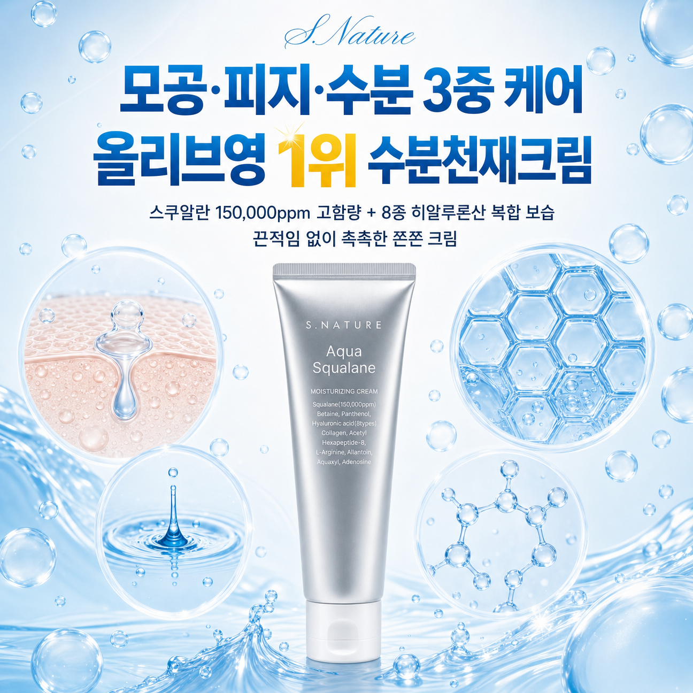
01 올리브영 1위, 15,915건 리뷰가 증명하는 수분천재크림 ✓ 138.8s
첨부 레퍼런스 (페이로드 image_urls, 순서대로)
프롬프트
Recreate this e-commerce detail SECTION by swapping in a new product — stay FAITHFUL to the preset section's full structure. - FIRST ref = preset section = the exact LAYOUT/TYPOGRAPHY/DECORATION template to replicate. - SECOND ref = product sheet (clean studio shots, multiple colors/angles) = use the appropriate product/color, faithful, no distortion: S.NATURE Aqua Squalane이라고 적힌 은색/메탈릭 그레이 색상의 길쭉하고 납작한 스퀴즈 튜브로, 흰색 캡이 특징인 수분크림 제품입니다. (용기형: 스퀴즈 튜브, 길쭉하고 납작한 원통형). ⭐ FIDELITY: keep EVERY structural element of the preset section. If it has a point/feature grid (포인트 1~4), keep that exact grid count and layout. If it shows the product from multiple angles, show multiple angles. If it has a product-info / spec block, keep that block. If it shows color options, show this product's color variants. Do NOT simplify, omit, merge, or reduce the layout — only swap product, recolor to product palette, and translate text. Template intent: 제품 소개 및 핵심 효능 강조. Layout: 상단에 제품명/카테고리 헤드라인, 중단에 핵심 효능 문구와 기능성 강조 배지, 하단에 제품 이미지 중심 배치. DESIGN SYSTEM — apply these exact recurring design elements (inherited from preset, recolored to product palette): - Section header: 메인 타이틀은 크고 굵은 핑크/골드 그라데이션 또는 단색 핑크로 중앙 정렬. 서브 섹션 타이틀은 중간에서 큰 크기, 굵은 핑크 또는 검정색으로 좌측 정렬. 효능 타이틀은 둥근 핑크색 배경 칩에 흰색 텍스트로 좌측 정렬. 보조 헤더는 작고 보통 굵기, 검정색으로 좌측 정렬. - Point/bullet marks: 작고 미묘한 연핑크 또는 회색 점/대시를 사용하여 목록의 불릿 포인트로 활용. - Dividers: 주요 콘텐츠 블록 간에는 충분한 수직 여백(흰색 공간)을 주로 사용. 섹션 구분으로 미묘한 배경색 전환(예: 연핑크에서 흰색)도 활용. 명시적인 수평선은 주요 섹션 구분선으로 사용하지 않음. - Fonts: 한글/영문 모두 본문과 대부분의 제목에 깨끗하고 현대적인 산세리프 폰트 사용. 제목은 굵게, 본문은 보통 굵기로 대비. 브랜드명(CHOOSYU)은 독특하고 우아한 스크립트 폰트 사용. 메인 타이틀, 서브 타이틀, 본문 텍스트 간에 크기와 굵기의 명확한 계층 구조를 가짐. - Icon/decoration motifs: 브랜드 로고는 우아한 스크립트 폰트. 배경 장식으로 투명하고 구형의 연핑크/로즈골드 버블 사용. 성분 설명 옆에는 육각형 세포, 피부 질감, 혈액 세포 등 사실적이고 과학적인 스타일의 클로즈업 이미지를 시각 자료로 활용. 뱃지 내부에 작은 별과 같은 최소한의 기능성 아이콘 사용. - Badges/price chips: 제품 효능(예: '미백·주름개선 2중 기능성 화장품') 및 임상 결과(예: '30% 개선') 표기에는 핑크색 배경에 흰색 텍스트를 사용한 원형 뱃지 사용. 백분율은 크고 눈에 띄게 표시. 효능 타이틀(예: '멜라닌 케어')에는 핑크색 배경에 흰색 텍스트를 사용한 직사각형/둥근 모서리 칩 사용. 가격 표시는 없음. - Color application structure (keep this structure, remap to product palette): 콘텐츠 영역은 주로 깨끗한 흰색 배경을 사용하며, 부드러운 연한 분홍색을 히어로 섹션이나 시각적 깊이/구분선 생성에 활용. 주요 강조색은 부드러운 채도 낮은 로즈 핑크로, 메인 타이틀 및 주요 헤더 텍스트, 뱃지/칩 배경, 일부 장식 요소, 미묘한 포인트 마크에 적용. 보조 강조색은 로즈골드/구리 메탈릭 광택으로, 제품 패키징 디테일, 때로는 브랜드 로고 텍스트나 미묘한 그라데이션에 사용. 본문 텍스트는 흰색 배경에서 높은 가독성을 위해 짙은 회색 또는 검정색. 핑크색 배경의 강조 텍스트는 흰색. 브랜드명은 로즈골드 또는 핑크색. 흰색 콘텐츠 블록은 부드러운 핑크색 섹션으로 둘러싸이거나 중간에 삽입되며, 주요 정보와 브랜딩은 핑크색 또는 로즈골드로 강조. STYLE RULES: - LAYOUT/TYPOGRAPHY/DECORATION come from the preset template reference(s) — preserve exact composition, positions, typographic style, motifs. - COLORS come from THIS product — recolor everything to: primary #00A3E0, secondary #E8F7FC, accent #FFD700, dark #1A3A52, light #F5FCFF. Do not keep template colors. - PRODUCT FIDELITY: keep the product's REAL form, container type, proportions, and shape from the product reference. NEVER change the container/form factor (a squeeze tube stays a tube, a pump bottle stays a pump, a jar stays a jar). Do NOT stretch, squash, warp, or distort. Natural proportions, clean. - TEXT: Korean only (브랜드/단위/약어만 영어), zero spelling errors, fully legible. - NO COMMERCE UI: this is a product-INTRODUCTION image only. Absolutely NO buttons, NO "구매하기"/"장바구니"/"수량 선택"/CTA, no cart/quantity/checkout widgets, no price-with-buy-button, no 상품정보 commerce table. The shopping platform renders all purchase UI separately — never draw it. - FULL-BLEED: the design FILLS the ENTIRE frame edge-to-edge. NO white side margins, NO letterbox/pillarbox bars, NO empty padding on left/right or top/bottom. The background color/scene extends to all four edges. - STATIC image. Mobile vertical. QUALITY (this is a FINISHED, polished design — not a placeholder): - ICONS: modern 3D glossy rounded app-style icons (like Toss / premium fintech UI) — soft gradients, subtle long shadows, friendly & premium. NOT flat thin line icons. - SECTION HEADER: properly designed — large bold Korean title + tasteful styled sub-label/accent. Never plain or awkward. - FEATURE / KEY POINT blocks: CLEAN and uncluttered — at most 3-4 short points, generous spacing, minimal text. Do not cram long sentences. - NO EMPTY BOXES: match the number of product cells EXACTLY to the real item/variant count. Never leave empty placeholder boxes (2 products → 2 cells, never 4 with 2 empty). - PRODUCT SCALE: show the product on its own at realistic, natural scale. NEVER show hands/models holding the product. If the template has a hand-held/worn shot, replace it with a clean product-only shot at correct proportions. - NO PRICE: never render any price, discount %, or 원 amount anywhere — pricing changes and is the platform's job. NEW CONTENT (Korean): - Section title: "올리브영 1위, 15,915건 리뷰가 증명하는 수분천재크림" - Points: "평점 4.8 / 리뷰 15,915건 압도적 만족도", "올리브영 어워즈 3년 연속 수상 + 화해 뷰티어워드 49관왕", "모공·피지·수분 고민 동시 해결로 남녀노소 사계절 사용" - Exact data (no invented numbers): 리뷰 15,915건 / 평점 4.8 / 올리브영 전체 카테고리 1위 VERBATIM KOREAN TEXT — render each string EXACTLY, crisp and fully legible, zero malformed syllables: • 올리브영 1위, 15,915건 리뷰가 증명하는 수분천재크림 • 평점 4.8 / 리뷰 15,915건 압도적 만족도 • 올리브영 어워즈 3년 연속 수상 + 화해 뷰티어워드 49관왕 • 모공·피지·수분 고민 동시 해결로 남녀노소 사계절 사용 • 리뷰 15,915건 / 평점 4.8 / 올리브영 전체 카테고리 1위
결과
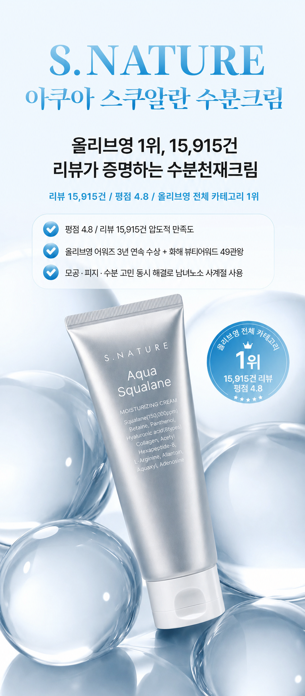
02 스쿠알란 150,000ppm 고함량 피부 장벽 강화 핵심 성분 ✓ 132.8s
첨부 레퍼런스 (페이로드 image_urls, 순서대로)
프롬프트
Recreate this e-commerce detail SECTION by swapping in a new product — stay FAITHFUL to the preset section's full structure. - FIRST ref = preset section = the exact LAYOUT/TYPOGRAPHY/DECORATION template to replicate. - SECOND ref = product sheet (clean studio shots, multiple colors/angles) = use the appropriate product/color, faithful, no distortion: S.NATURE Aqua Squalane이라고 적힌 은색/메탈릭 그레이 색상의 길쭉하고 납작한 스퀴즈 튜브로, 흰색 캡이 특징인 수분크림 제품입니다. (용기형: 스퀴즈 튜브, 길쭉하고 납작한 원통형). ⭐ FIDELITY: keep EVERY structural element of the preset section. If it has a point/feature grid (포인트 1~4), keep that exact grid count and layout. If it shows the product from multiple angles, show multiple angles. If it has a product-info / spec block, keep that block. If it shows color options, show this product's color variants. Do NOT simplify, omit, merge, or reduce the layout — only swap product, recolor to product palette, and translate text. Template intent: 제품 소개 및 미백 효능 강조. Layout: 상단에 제품명과 핵심 문구가 좌측 정렬로 배치되고, 하단에 제품을 들고 있는 모델의 클로즈업 이미지가 크게 자리 잡음.. DESIGN SYSTEM — apply these exact recurring design elements (inherited from preset, recolored to product palette): - Section header: 메인 타이틀은 크고 굵은 핑크/골드 그라데이션 또는 단색 핑크로 중앙 정렬. 서브 섹션 타이틀은 중간에서 큰 크기, 굵은 핑크 또는 검정색으로 좌측 정렬. 효능 타이틀은 둥근 핑크색 배경 칩에 흰색 텍스트로 좌측 정렬. 보조 헤더는 작고 보통 굵기, 검정색으로 좌측 정렬. - Point/bullet marks: 작고 미묘한 연핑크 또는 회색 점/대시를 사용하여 목록의 불릿 포인트로 활용. - Dividers: 주요 콘텐츠 블록 간에는 충분한 수직 여백(흰색 공간)을 주로 사용. 섹션 구분으로 미묘한 배경색 전환(예: 연핑크에서 흰색)도 활용. 명시적인 수평선은 주요 섹션 구분선으로 사용하지 않음. - Fonts: 한글/영문 모두 본문과 대부분의 제목에 깨끗하고 현대적인 산세리프 폰트 사용. 제목은 굵게, 본문은 보통 굵기로 대비. 브랜드명(CHOOSYU)은 독특하고 우아한 스크립트 폰트 사용. 메인 타이틀, 서브 타이틀, 본문 텍스트 간에 크기와 굵기의 명확한 계층 구조를 가짐. - Icon/decoration motifs: 브랜드 로고는 우아한 스크립트 폰트. 배경 장식으로 투명하고 구형의 연핑크/로즈골드 버블 사용. 성분 설명 옆에는 육각형 세포, 피부 질감, 혈액 세포 등 사실적이고 과학적인 스타일의 클로즈업 이미지를 시각 자료로 활용. 뱃지 내부에 작은 별과 같은 최소한의 기능성 아이콘 사용. - Badges/price chips: 제품 효능(예: '미백·주름개선 2중 기능성 화장품') 및 임상 결과(예: '30% 개선') 표기에는 핑크색 배경에 흰색 텍스트를 사용한 원형 뱃지 사용. 백분율은 크고 눈에 띄게 표시. 효능 타이틀(예: '멜라닌 케어')에는 핑크색 배경에 흰색 텍스트를 사용한 직사각형/둥근 모서리 칩 사용. 가격 표시는 없음. - Color application structure (keep this structure, remap to product palette): 콘텐츠 영역은 주로 깨끗한 흰색 배경을 사용하며, 부드러운 연한 분홍색을 히어로 섹션이나 시각적 깊이/구분선 생성에 활용. 주요 강조색은 부드러운 채도 낮은 로즈 핑크로, 메인 타이틀 및 주요 헤더 텍스트, 뱃지/칩 배경, 일부 장식 요소, 미묘한 포인트 마크에 적용. 보조 강조색은 로즈골드/구리 메탈릭 광택으로, 제품 패키징 디테일, 때로는 브랜드 로고 텍스트나 미묘한 그라데이션에 사용. 본문 텍스트는 흰색 배경에서 높은 가독성을 위해 짙은 회색 또는 검정색. 핑크색 배경의 강조 텍스트는 흰색. 브랜드명은 로즈골드 또는 핑크색. 흰색 콘텐츠 블록은 부드러운 핑크색 섹션으로 둘러싸이거나 중간에 삽입되며, 주요 정보와 브랜딩은 핑크색 또는 로즈골드로 강조. STYLE RULES: - LAYOUT/TYPOGRAPHY/DECORATION come from the preset template reference(s) — preserve exact composition, positions, typographic style, motifs. - COLORS come from THIS product — recolor everything to: primary #00A3E0, secondary #E8F7FC, accent #FFD700, dark #1A3A52, light #F5FCFF. Do not keep template colors. - PRODUCT FIDELITY: keep the product's REAL form, container type, proportions, and shape from the product reference. NEVER change the container/form factor (a squeeze tube stays a tube, a pump bottle stays a pump, a jar stays a jar). Do NOT stretch, squash, warp, or distort. Natural proportions, clean. - TEXT: Korean only (브랜드/단위/약어만 영어), zero spelling errors, fully legible. - NO COMMERCE UI: this is a product-INTRODUCTION image only. Absolutely NO buttons, NO "구매하기"/"장바구니"/"수량 선택"/CTA, no cart/quantity/checkout widgets, no price-with-buy-button, no 상품정보 commerce table. The shopping platform renders all purchase UI separately — never draw it. - FULL-BLEED: the design FILLS the ENTIRE frame edge-to-edge. NO white side margins, NO letterbox/pillarbox bars, NO empty padding on left/right or top/bottom. The background color/scene extends to all four edges. - STATIC image. Mobile vertical. QUALITY (this is a FINISHED, polished design — not a placeholder): - ICONS: modern 3D glossy rounded app-style icons (like Toss / premium fintech UI) — soft gradients, subtle long shadows, friendly & premium. NOT flat thin line icons. - SECTION HEADER: properly designed — large bold Korean title + tasteful styled sub-label/accent. Never plain or awkward. - FEATURE / KEY POINT blocks: CLEAN and uncluttered — at most 3-4 short points, generous spacing, minimal text. Do not cram long sentences. - NO EMPTY BOXES: match the number of product cells EXACTLY to the real item/variant count. Never leave empty placeholder boxes (2 products → 2 cells, never 4 with 2 empty). - PRODUCT SCALE: show the product on its own at realistic, natural scale. NEVER show hands/models holding the product. If the template has a hand-held/worn shot, replace it with a clean product-only shot at correct proportions. - NO PRICE: never render any price, discount %, or 원 amount anywhere — pricing changes and is the platform's job. NEW CONTENT (Korean): - Section title: "스쿠알란 150,000ppm 고함량 피부 장벽 강화 핵심 성분" - Points: "올리브 유래 스쿠알란 150,000ppm 초고함량 함유", "피부 친화적 보습막 형성으로 수분 증발 차단", "8종 히알루론산 + 판테놀 + 베타인 복합 보습 시너지" - Exact data (no invented numbers): 스쿠알란 150,000ppm / 8종 히알루론산 + 판테놀 + 베타인 복합 VERBATIM KOREAN TEXT — render each string EXACTLY, crisp and fully legible, zero malformed syllables: • 스쿠알란 150,000ppm 고함량 피부 장벽 강화 핵심 성분 • 올리브 유래 스쿠알란 150,000ppm 초고함량 함유 • 피부 친화적 보습막 형성으로 수분 증발 차단 • 8종 히알루론산 + 판테놀 + 베타인 복합 보습 시너지 • 스쿠알란 150,000ppm / 8종 히알루론산 + 판테놀 + 베타인 복합
결과
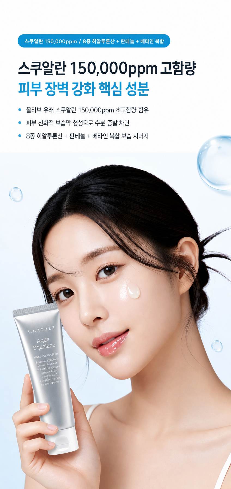
03 모공 면적 52.69% 감소 임상으로 입증된 모공 케어 ✓ 119.2s
첨부 레퍼런스 (페이로드 image_urls, 순서대로)
프롬프트
Recreate this e-commerce detail SECTION by swapping in a new product — stay FAITHFUL to the preset section's full structure. - FIRST ref = preset section = the exact LAYOUT/TYPOGRAPHY/DECORATION template to replicate. - SECOND ref = product sheet (clean studio shots, multiple colors/angles) = use the appropriate product/color, faithful, no distortion: S.NATURE Aqua Squalane이라고 적힌 은색/메탈릭 그레이 색상의 길쭉하고 납작한 스퀴즈 튜브로, 흰색 캡이 특징인 수분크림 제품입니다. (용기형: 스퀴즈 튜브, 길쭉하고 납작한 원통형). ⭐ FIDELITY: keep EVERY structural element of the preset section. If it has a point/feature grid (포인트 1~4), keep that exact grid count and layout. If it shows the product from multiple angles, show multiple angles. If it has a product-info / spec block, keep that block. If it shows color options, show this product's color variants. Do NOT simplify, omit, merge, or reduce the layout — only swap product, recolor to product palette, and translate text. Template intent: 제품의 특정 피부 고민(기미/색소 침착, 여드름 자국, 붉은기) 개선 효과 설명. Layout: 좌측에 피부 클로즈업 이미지, 우측에 텍스트 설명이 있는 3단 세로 블록 구조. 각 블록은 상단에 작은 라벨, 중간에 굵은 제목, 하단에 상세 설명 문단으로 구성됨.. DESIGN SYSTEM — apply these exact recurring design elements (inherited from preset, recolored to product palette): - Section header: 메인 타이틀은 크고 굵은 핑크/골드 그라데이션 또는 단색 핑크로 중앙 정렬. 서브 섹션 타이틀은 중간에서 큰 크기, 굵은 핑크 또는 검정색으로 좌측 정렬. 효능 타이틀은 둥근 핑크색 배경 칩에 흰색 텍스트로 좌측 정렬. 보조 헤더는 작고 보통 굵기, 검정색으로 좌측 정렬. - Point/bullet marks: 작고 미묘한 연핑크 또는 회색 점/대시를 사용하여 목록의 불릿 포인트로 활용. - Dividers: 주요 콘텐츠 블록 간에는 충분한 수직 여백(흰색 공간)을 주로 사용. 섹션 구분으로 미묘한 배경색 전환(예: 연핑크에서 흰색)도 활용. 명시적인 수평선은 주요 섹션 구분선으로 사용하지 않음. - Fonts: 한글/영문 모두 본문과 대부분의 제목에 깨끗하고 현대적인 산세리프 폰트 사용. 제목은 굵게, 본문은 보통 굵기로 대비. 브랜드명(CHOOSYU)은 독특하고 우아한 스크립트 폰트 사용. 메인 타이틀, 서브 타이틀, 본문 텍스트 간에 크기와 굵기의 명확한 계층 구조를 가짐. - Icon/decoration motifs: 브랜드 로고는 우아한 스크립트 폰트. 배경 장식으로 투명하고 구형의 연핑크/로즈골드 버블 사용. 성분 설명 옆에는 육각형 세포, 피부 질감, 혈액 세포 등 사실적이고 과학적인 스타일의 클로즈업 이미지를 시각 자료로 활용. 뱃지 내부에 작은 별과 같은 최소한의 기능성 아이콘 사용. - Badges/price chips: 제품 효능(예: '미백·주름개선 2중 기능성 화장품') 및 임상 결과(예: '30% 개선') 표기에는 핑크색 배경에 흰색 텍스트를 사용한 원형 뱃지 사용. 백분율은 크고 눈에 띄게 표시. 효능 타이틀(예: '멜라닌 케어')에는 핑크색 배경에 흰색 텍스트를 사용한 직사각형/둥근 모서리 칩 사용. 가격 표시는 없음. - Color application structure (keep this structure, remap to product palette): 콘텐츠 영역은 주로 깨끗한 흰색 배경을 사용하며, 부드러운 연한 분홍색을 히어로 섹션이나 시각적 깊이/구분선 생성에 활용. 주요 강조색은 부드러운 채도 낮은 로즈 핑크로, 메인 타이틀 및 주요 헤더 텍스트, 뱃지/칩 배경, 일부 장식 요소, 미묘한 포인트 마크에 적용. 보조 강조색은 로즈골드/구리 메탈릭 광택으로, 제품 패키징 디테일, 때로는 브랜드 로고 텍스트나 미묘한 그라데이션에 사용. 본문 텍스트는 흰색 배경에서 높은 가독성을 위해 짙은 회색 또는 검정색. 핑크색 배경의 강조 텍스트는 흰색. 브랜드명은 로즈골드 또는 핑크색. 흰색 콘텐츠 블록은 부드러운 핑크색 섹션으로 둘러싸이거나 중간에 삽입되며, 주요 정보와 브랜딩은 핑크색 또는 로즈골드로 강조. STYLE RULES: - LAYOUT/TYPOGRAPHY/DECORATION come from the preset template reference(s) — preserve exact composition, positions, typographic style, motifs. - COLORS come from THIS product — recolor everything to: primary #00A3E0, secondary #E8F7FC, accent #FFD700, dark #1A3A52, light #F5FCFF. Do not keep template colors. - PRODUCT FIDELITY: keep the product's REAL form, container type, proportions, and shape from the product reference. NEVER change the container/form factor (a squeeze tube stays a tube, a pump bottle stays a pump, a jar stays a jar). Do NOT stretch, squash, warp, or distort. Natural proportions, clean. - TEXT: Korean only (브랜드/단위/약어만 영어), zero spelling errors, fully legible. - NO COMMERCE UI: this is a product-INTRODUCTION image only. Absolutely NO buttons, NO "구매하기"/"장바구니"/"수량 선택"/CTA, no cart/quantity/checkout widgets, no price-with-buy-button, no 상품정보 commerce table. The shopping platform renders all purchase UI separately — never draw it. - FULL-BLEED: the design FILLS the ENTIRE frame edge-to-edge. NO white side margins, NO letterbox/pillarbox bars, NO empty padding on left/right or top/bottom. The background color/scene extends to all four edges. - STATIC image. Mobile vertical. QUALITY (this is a FINISHED, polished design — not a placeholder): - ICONS: modern 3D glossy rounded app-style icons (like Toss / premium fintech UI) — soft gradients, subtle long shadows, friendly & premium. NOT flat thin line icons. - SECTION HEADER: properly designed — large bold Korean title + tasteful styled sub-label/accent. Never plain or awkward. - FEATURE / KEY POINT blocks: CLEAN and uncluttered — at most 3-4 short points, generous spacing, minimal text. Do not cram long sentences. - NO EMPTY BOXES: match the number of product cells EXACTLY to the real item/variant count. Never leave empty placeholder boxes (2 products → 2 cells, never 4 with 2 empty). - PRODUCT SCALE: show the product on its own at realistic, natural scale. NEVER show hands/models holding the product. If the template has a hand-held/worn shot, replace it with a clean product-only shot at correct proportions. - NO PRICE: never render any price, discount %, or 원 amount anywhere — pricing changes and is the platform's job. NEW CONTENT (Korean): - Section title: "모공 면적 52.69% 감소 임상으로 입증된 모공 케어" - Points: "모공 면적 52.69% 감소 / 모공 깊이 55.73% 감소", "피지량 24.62% 감소로 유수분 밸런스 조절", "논코메도제닉 테스트 완료, 여드름성 피부 사용 적합" - Exact data (no invented numbers): 모공 면적 52.69% 감소 / 모공 깊이 55.73% 감소 / 피지량 24.62% 감소 VERBATIM KOREAN TEXT — render each string EXACTLY, crisp and fully legible, zero malformed syllables: • 모공 면적 52.69% 감소 임상으로 입증된 모공 케어 • 모공 면적 52.69% 감소 / 모공 깊이 55.73% 감소 • 피지량 24.62% 감소로 유수분 밸런스 조절 • 논코메도제닉 테스트 완료, 여드름성 피부 사용 적합 • 모공 면적 52.69% 감소 / 모공 깊이 55.73% 감소 / 피지량 24.62% 감소
결과
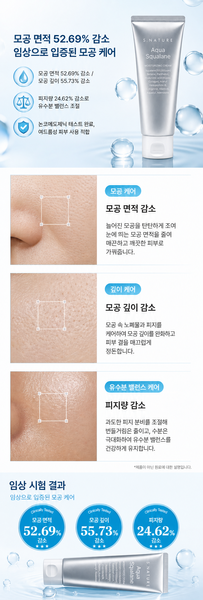
04 수분 함유도 78.75% 증가 속까지 촉촉한 깊은 보습 ✓ 108.3s
첨부 레퍼런스 (페이로드 image_urls, 순서대로)
프롬프트
Recreate this e-commerce detail SECTION by swapping in a new product — stay FAITHFUL to the preset section's full structure. - FIRST ref = preset section = the exact LAYOUT/TYPOGRAPHY/DECORATION template to replicate. - SECOND ref = product sheet (clean studio shots, multiple colors/angles) = use the appropriate product/color, faithful, no distortion: S.NATURE Aqua Squalane이라고 적힌 은색/메탈릭 그레이 색상의 길쭉하고 납작한 스퀴즈 튜브로, 흰색 캡이 특징인 수분크림 제품입니다. (용기형: 스퀴즈 튜브, 길쭉하고 납작한 원통형). ⭐ FIDELITY: keep EVERY structural element of the preset section. If it has a point/feature grid (포인트 1~4), keep that exact grid count and layout. If it shows the product from multiple angles, show multiple angles. If it has a product-info / spec block, keep that block. If it shows color options, show this product's color variants. Do NOT simplify, omit, merge, or reduce the layout — only swap product, recolor to product palette, and translate text. Template intent: 제품의 핵심 성분과 효능(브라이트닝, 안티에이징, 균일한 피부 톤)을 소개하고, 피부 변화에 대한 감성적인 메시지를 전달하며, 특정 핵심 성분(멜라제로)의 작용 원리를 상세히 설명합니다.. Layout: 상단에는 영문 서브타이틀과 한글 메인 카피가 중앙 정렬되어 배치됩니다. 중간에는 제품 보틀이 사선으로 배치되고, 주변에 세 가지 주요 성분명과 설명이 점선으로 연결되어 있습니다. 그 아래에는 세 줄의 한글 설명 문구가 좌측 정렬되어 있습니다. 하단에는 2단 레이아웃으로, 좌측에 특정 성분(멜라제로)의 상세 설명과 해시태그 포인트가, 우측에는 피부 세포를 시각화한 그래픽이 배치됩니다.. DESIGN SYSTEM — apply these exact recurring design elements (inherited from preset, recolored to product palette): - Section header: 메인 타이틀은 크고 굵은 핑크/골드 그라데이션 또는 단색 핑크로 중앙 정렬. 서브 섹션 타이틀은 중간에서 큰 크기, 굵은 핑크 또는 검정색으로 좌측 정렬. 효능 타이틀은 둥근 핑크색 배경 칩에 흰색 텍스트로 좌측 정렬. 보조 헤더는 작고 보통 굵기, 검정색으로 좌측 정렬. - Point/bullet marks: 작고 미묘한 연핑크 또는 회색 점/대시를 사용하여 목록의 불릿 포인트로 활용. - Dividers: 주요 콘텐츠 블록 간에는 충분한 수직 여백(흰색 공간)을 주로 사용. 섹션 구분으로 미묘한 배경색 전환(예: 연핑크에서 흰색)도 활용. 명시적인 수평선은 주요 섹션 구분선으로 사용하지 않음. - Fonts: 한글/영문 모두 본문과 대부분의 제목에 깨끗하고 현대적인 산세리프 폰트 사용. 제목은 굵게, 본문은 보통 굵기로 대비. 브랜드명(CHOOSYU)은 독특하고 우아한 스크립트 폰트 사용. 메인 타이틀, 서브 타이틀, 본문 텍스트 간에 크기와 굵기의 명확한 계층 구조를 가짐. - Icon/decoration motifs: 브랜드 로고는 우아한 스크립트 폰트. 배경 장식으로 투명하고 구형의 연핑크/로즈골드 버블 사용. 성분 설명 옆에는 육각형 세포, 피부 질감, 혈액 세포 등 사실적이고 과학적인 스타일의 클로즈업 이미지를 시각 자료로 활용. 뱃지 내부에 작은 별과 같은 최소한의 기능성 아이콘 사용. - Badges/price chips: 제품 효능(예: '미백·주름개선 2중 기능성 화장품') 및 임상 결과(예: '30% 개선') 표기에는 핑크색 배경에 흰색 텍스트를 사용한 원형 뱃지 사용. 백분율은 크고 눈에 띄게 표시. 효능 타이틀(예: '멜라닌 케어')에는 핑크색 배경에 흰색 텍스트를 사용한 직사각형/둥근 모서리 칩 사용. 가격 표시는 없음. - Color application structure (keep this structure, remap to product palette): 콘텐츠 영역은 주로 깨끗한 흰색 배경을 사용하며, 부드러운 연한 분홍색을 히어로 섹션이나 시각적 깊이/구분선 생성에 활용. 주요 강조색은 부드러운 채도 낮은 로즈 핑크로, 메인 타이틀 및 주요 헤더 텍스트, 뱃지/칩 배경, 일부 장식 요소, 미묘한 포인트 마크에 적용. 보조 강조색은 로즈골드/구리 메탈릭 광택으로, 제품 패키징 디테일, 때로는 브랜드 로고 텍스트나 미묘한 그라데이션에 사용. 본문 텍스트는 흰색 배경에서 높은 가독성을 위해 짙은 회색 또는 검정색. 핑크색 배경의 강조 텍스트는 흰색. 브랜드명은 로즈골드 또는 핑크색. 흰색 콘텐츠 블록은 부드러운 핑크색 섹션으로 둘러싸이거나 중간에 삽입되며, 주요 정보와 브랜딩은 핑크색 또는 로즈골드로 강조. STYLE RULES: - LAYOUT/TYPOGRAPHY/DECORATION come from the preset template reference(s) — preserve exact composition, positions, typographic style, motifs. - COLORS come from THIS product — recolor everything to: primary #00A3E0, secondary #E8F7FC, accent #FFD700, dark #1A3A52, light #F5FCFF. Do not keep template colors. - PRODUCT FIDELITY: keep the product's REAL form, container type, proportions, and shape from the product reference. NEVER change the container/form factor (a squeeze tube stays a tube, a pump bottle stays a pump, a jar stays a jar). Do NOT stretch, squash, warp, or distort. Natural proportions, clean. - TEXT: Korean only (브랜드/단위/약어만 영어), zero spelling errors, fully legible. - NO COMMERCE UI: this is a product-INTRODUCTION image only. Absolutely NO buttons, NO "구매하기"/"장바구니"/"수량 선택"/CTA, no cart/quantity/checkout widgets, no price-with-buy-button, no 상품정보 commerce table. The shopping platform renders all purchase UI separately — never draw it. - FULL-BLEED: the design FILLS the ENTIRE frame edge-to-edge. NO white side margins, NO letterbox/pillarbox bars, NO empty padding on left/right or top/bottom. The background color/scene extends to all four edges. - STATIC image. Mobile vertical. QUALITY (this is a FINISHED, polished design — not a placeholder): - ICONS: modern 3D glossy rounded app-style icons (like Toss / premium fintech UI) — soft gradients, subtle long shadows, friendly & premium. NOT flat thin line icons. - SECTION HEADER: properly designed — large bold Korean title + tasteful styled sub-label/accent. Never plain or awkward. - FEATURE / KEY POINT blocks: CLEAN and uncluttered — at most 3-4 short points, generous spacing, minimal text. Do not cram long sentences. - NO EMPTY BOXES: match the number of product cells EXACTLY to the real item/variant count. Never leave empty placeholder boxes (2 products → 2 cells, never 4 with 2 empty). - PRODUCT SCALE: show the product on its own at realistic, natural scale. NEVER show hands/models holding the product. If the template has a hand-held/worn shot, replace it with a clean product-only shot at correct proportions. - NO PRICE: never render any price, discount %, or 원 amount anywhere — pricing changes and is the platform's job. NEW CONTENT (Korean): - Section title: "수분 함유도 78.75% 증가 속까지 촉촉한 깊은 보습" - Points: "수분 함유도 78.75% 증가 / 속보습 8.58% 개선 임상 완료", "8종 히알루론산이 피부 표층부터 진피층까지 수분 공급", "건조한 환경에서도 오래 지속되는 촉촉함" - Exact data (no invented numbers): 수분 함유도 78.75% 증가 / 속보습 8.58% 개선 VERBATIM KOREAN TEXT — render each string EXACTLY, crisp and fully legible, zero malformed syllables: • 수분 함유도 78.75% 증가 속까지 촉촉한 깊은 보습 • 수분 함유도 78.75% 증가 / 속보습 8.58% 개선 임상 완료 • 8종 히알루론산이 피부 표층부터 진피층까지 수분 공급 • 건조한 환경에서도 오래 지속되는 촉촉함 • 수분 함유도 78.75% 증가 / 속보습 8.58% 개선
결과
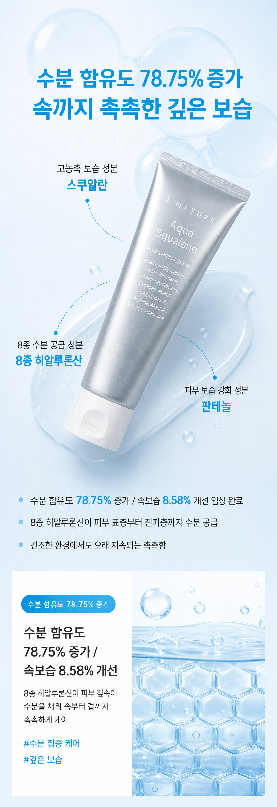
05 쫀쫀 탱탱 푸딩 제형 끈적임 없는 빠른 흡수 ✓ 104.0s
첨부 레퍼런스 (페이로드 image_urls, 순서대로)
프롬프트
Recreate this e-commerce detail SECTION by swapping in a new product — stay FAITHFUL to the preset section's full structure. - FIRST ref = preset section = the exact LAYOUT/TYPOGRAPHY/DECORATION template to replicate. - SECOND ref = product sheet (clean studio shots, multiple colors/angles) = use the appropriate product/color, faithful, no distortion: S.NATURE Aqua Squalane이라고 적힌 은색/메탈릭 그레이 색상의 길쭉하고 납작한 스퀴즈 튜브로, 흰색 캡이 특징인 수분크림 제품입니다. (용기형: 스퀴즈 튜브, 길쭉하고 납작한 원통형). ⭐ FIDELITY: keep EVERY structural element of the preset section. If it has a point/feature grid (포인트 1~4), keep that exact grid count and layout. If it shows the product from multiple angles, show multiple angles. If it has a product-info / spec block, keep that block. If it shows color options, show this product's color variants. Do NOT simplify, omit, merge, or reduce the layout — only swap product, recolor to product palette, and translate text. Template intent: 핵심 성분 소개 및 효능 강조, 제품 비주얼 노출, 제품의 주요 효과(투명 피부)를 강조하는 클로징 메시지 전달. Layout: 상단은 두 개의 세로 스택형 블록으로, 각 블록은 좌측 텍스트(제목, 설명, 해시태그)와 우측 관련 이미지의 2단 구성입니다. 중간은 제품이 중앙에 배치되고 배경에 큰 브랜드명이 있는 구조입니다. 하단은 중앙 정렬된 텍스트 블록(영문 태그라인, 한글 해시태그, 주요 메시지)으로 구성됩니다.. DESIGN SYSTEM — apply these exact recurring design elements (inherited from preset, recolored to product palette): - Section header: 메인 타이틀은 크고 굵은 핑크/골드 그라데이션 또는 단색 핑크로 중앙 정렬. 서브 섹션 타이틀은 중간에서 큰 크기, 굵은 핑크 또는 검정색으로 좌측 정렬. 효능 타이틀은 둥근 핑크색 배경 칩에 흰색 텍스트로 좌측 정렬. 보조 헤더는 작고 보통 굵기, 검정색으로 좌측 정렬. - Point/bullet marks: 작고 미묘한 연핑크 또는 회색 점/대시를 사용하여 목록의 불릿 포인트로 활용. - Dividers: 주요 콘텐츠 블록 간에는 충분한 수직 여백(흰색 공간)을 주로 사용. 섹션 구분으로 미묘한 배경색 전환(예: 연핑크에서 흰색)도 활용. 명시적인 수평선은 주요 섹션 구분선으로 사용하지 않음. - Fonts: 한글/영문 모두 본문과 대부분의 제목에 깨끗하고 현대적인 산세리프 폰트 사용. 제목은 굵게, 본문은 보통 굵기로 대비. 브랜드명(CHOOSYU)은 독특하고 우아한 스크립트 폰트 사용. 메인 타이틀, 서브 타이틀, 본문 텍스트 간에 크기와 굵기의 명확한 계층 구조를 가짐. - Icon/decoration motifs: 브랜드 로고는 우아한 스크립트 폰트. 배경 장식으로 투명하고 구형의 연핑크/로즈골드 버블 사용. 성분 설명 옆에는 육각형 세포, 피부 질감, 혈액 세포 등 사실적이고 과학적인 스타일의 클로즈업 이미지를 시각 자료로 활용. 뱃지 내부에 작은 별과 같은 최소한의 기능성 아이콘 사용. - Badges/price chips: 제품 효능(예: '미백·주름개선 2중 기능성 화장품') 및 임상 결과(예: '30% 개선') 표기에는 핑크색 배경에 흰색 텍스트를 사용한 원형 뱃지 사용. 백분율은 크고 눈에 띄게 표시. 효능 타이틀(예: '멜라닌 케어')에는 핑크색 배경에 흰색 텍스트를 사용한 직사각형/둥근 모서리 칩 사용. 가격 표시는 없음. - Color application structure (keep this structure, remap to product palette): 콘텐츠 영역은 주로 깨끗한 흰색 배경을 사용하며, 부드러운 연한 분홍색을 히어로 섹션이나 시각적 깊이/구분선 생성에 활용. 주요 강조색은 부드러운 채도 낮은 로즈 핑크로, 메인 타이틀 및 주요 헤더 텍스트, 뱃지/칩 배경, 일부 장식 요소, 미묘한 포인트 마크에 적용. 보조 강조색은 로즈골드/구리 메탈릭 광택으로, 제품 패키징 디테일, 때로는 브랜드 로고 텍스트나 미묘한 그라데이션에 사용. 본문 텍스트는 흰색 배경에서 높은 가독성을 위해 짙은 회색 또는 검정색. 핑크색 배경의 강조 텍스트는 흰색. 브랜드명은 로즈골드 또는 핑크색. 흰색 콘텐츠 블록은 부드러운 핑크색 섹션으로 둘러싸이거나 중간에 삽입되며, 주요 정보와 브랜딩은 핑크색 또는 로즈골드로 강조. STYLE RULES: - LAYOUT/TYPOGRAPHY/DECORATION come from the preset template reference(s) — preserve exact composition, positions, typographic style, motifs. - COLORS come from THIS product — recolor everything to: primary #00A3E0, secondary #E8F7FC, accent #FFD700, dark #1A3A52, light #F5FCFF. Do not keep template colors. - PRODUCT FIDELITY: keep the product's REAL form, container type, proportions, and shape from the product reference. NEVER change the container/form factor (a squeeze tube stays a tube, a pump bottle stays a pump, a jar stays a jar). Do NOT stretch, squash, warp, or distort. Natural proportions, clean. - TEXT: Korean only (브랜드/단위/약어만 영어), zero spelling errors, fully legible. - NO COMMERCE UI: this is a product-INTRODUCTION image only. Absolutely NO buttons, NO "구매하기"/"장바구니"/"수량 선택"/CTA, no cart/quantity/checkout widgets, no price-with-buy-button, no 상품정보 commerce table. The shopping platform renders all purchase UI separately — never draw it. - FULL-BLEED: the design FILLS the ENTIRE frame edge-to-edge. NO white side margins, NO letterbox/pillarbox bars, NO empty padding on left/right or top/bottom. The background color/scene extends to all four edges. - STATIC image. Mobile vertical. QUALITY (this is a FINISHED, polished design — not a placeholder): - ICONS: modern 3D glossy rounded app-style icons (like Toss / premium fintech UI) — soft gradients, subtle long shadows, friendly & premium. NOT flat thin line icons. - SECTION HEADER: properly designed — large bold Korean title + tasteful styled sub-label/accent. Never plain or awkward. - FEATURE / KEY POINT blocks: CLEAN and uncluttered — at most 3-4 short points, generous spacing, minimal text. Do not cram long sentences. - NO EMPTY BOXES: match the number of product cells EXACTLY to the real item/variant count. Never leave empty placeholder boxes (2 products → 2 cells, never 4 with 2 empty). - PRODUCT SCALE: show the product on its own at realistic, natural scale. NEVER show hands/models holding the product. If the template has a hand-held/worn shot, replace it with a clean product-only shot at correct proportions. - NO PRICE: never render any price, discount %, or 원 amount anywhere — pricing changes and is the platform's job. NEW CONTENT (Korean): - Section title: "쫀쫀 탱탱 푸딩 제형 끈적임 없는 빠른 흡수" - Points: "젤-크림 하이브리드 제형으로 푸딩처럼 쫀쫀하고 부드러운 텍스처", "끈적임 없이 빠르게 흡수되어 사용감 우수", "선크림 위에 발라도 밀림 없는 화잘먹크림으로 수분광 연출" - Exact data (no invented numbers): 젤-크림 하이브리드 제형 / 끈적임 없는 빠른 흡수 VERBATIM KOREAN TEXT — render each string EXACTLY, crisp and fully legible, zero malformed syllables: • 쫀쫀 탱탱 푸딩 제형 끈적임 없는 빠른 흡수 • 젤-크림 하이브리드 제형으로 푸딩처럼 쫀쫀하고 부드러운 텍스처 • 끈적임 없이 빠르게 흡수되어 사용감 우수 • 선크림 위에 발라도 밀림 없는 화잘먹크림으로 수분광 연출 • 젤-크림 하이브리드 제형 / 끈적임 없는 빠른 흡수
결과
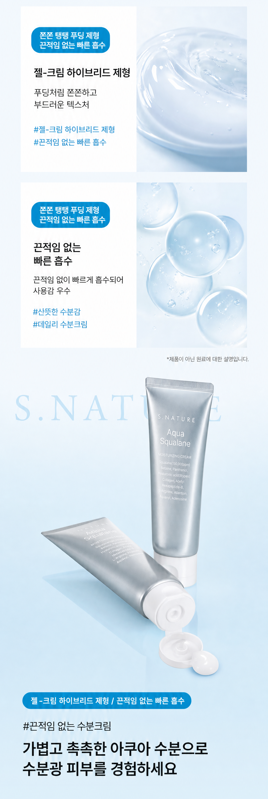
06 계면활성제·방부제·인공향료 무첨가 민감성 피부도 안심 ✓ 128.8s
첨부 레퍼런스 (페이로드 image_urls, 순서대로)
프롬프트
Recreate this e-commerce detail SECTION by swapping in a new product — stay FAITHFUL to the preset section's full structure. - FIRST ref = preset section = the exact LAYOUT/TYPOGRAPHY/DECORATION template to replicate. - SECOND ref = product sheet (clean studio shots, multiple colors/angles) = use the appropriate product/color, faithful, no distortion: S.NATURE Aqua Squalane이라고 적힌 은색/메탈릭 그레이 색상의 길쭉하고 납작한 스퀴즈 튜브로, 흰색 캡이 특징인 수분크림 제품입니다. (용기형: 스퀴즈 튜브, 길쭉하고 납작한 원통형). ⭐ FIDELITY: keep EVERY structural element of the preset section. If it has a point/feature grid (포인트 1~4), keep that exact grid count and layout. If it shows the product from multiple angles, show multiple angles. If it has a product-info / spec block, keep that block. If it shows color options, show this product's color variants. Do NOT simplify, omit, merge, or reduce the layout — only swap product, recolor to product palette, and translate text. Template intent: 제품 만족도 요약 및 후기. Layout: 상단에 섹션 제목과 전체 만족도, 중간에 구분선, 하단에 상세 만족도 항목별 수치 나열. DESIGN SYSTEM — apply these exact recurring design elements (inherited from preset, recolored to product palette): - Section header: 메인 타이틀은 크고 굵은 핑크/골드 그라데이션 또는 단색 핑크로 중앙 정렬. 서브 섹션 타이틀은 중간에서 큰 크기, 굵은 핑크 또는 검정색으로 좌측 정렬. 효능 타이틀은 둥근 핑크색 배경 칩에 흰색 텍스트로 좌측 정렬. 보조 헤더는 작고 보통 굵기, 검정색으로 좌측 정렬. - Point/bullet marks: 작고 미묘한 연핑크 또는 회색 점/대시를 사용하여 목록의 불릿 포인트로 활용. - Dividers: 주요 콘텐츠 블록 간에는 충분한 수직 여백(흰색 공간)을 주로 사용. 섹션 구분으로 미묘한 배경색 전환(예: 연핑크에서 흰색)도 활용. 명시적인 수평선은 주요 섹션 구분선으로 사용하지 않음. - Fonts: 한글/영문 모두 본문과 대부분의 제목에 깨끗하고 현대적인 산세리프 폰트 사용. 제목은 굵게, 본문은 보통 굵기로 대비. 브랜드명(CHOOSYU)은 독특하고 우아한 스크립트 폰트 사용. 메인 타이틀, 서브 타이틀, 본문 텍스트 간에 크기와 굵기의 명확한 계층 구조를 가짐. - Icon/decoration motifs: 브랜드 로고는 우아한 스크립트 폰트. 배경 장식으로 투명하고 구형의 연핑크/로즈골드 버블 사용. 성분 설명 옆에는 육각형 세포, 피부 질감, 혈액 세포 등 사실적이고 과학적인 스타일의 클로즈업 이미지를 시각 자료로 활용. 뱃지 내부에 작은 별과 같은 최소한의 기능성 아이콘 사용. - Badges/price chips: 제품 효능(예: '미백·주름개선 2중 기능성 화장품') 및 임상 결과(예: '30% 개선') 표기에는 핑크색 배경에 흰색 텍스트를 사용한 원형 뱃지 사용. 백분율은 크고 눈에 띄게 표시. 효능 타이틀(예: '멜라닌 케어')에는 핑크색 배경에 흰색 텍스트를 사용한 직사각형/둥근 모서리 칩 사용. 가격 표시는 없음. - Color application structure (keep this structure, remap to product palette): 콘텐츠 영역은 주로 깨끗한 흰색 배경을 사용하며, 부드러운 연한 분홍색을 히어로 섹션이나 시각적 깊이/구분선 생성에 활용. 주요 강조색은 부드러운 채도 낮은 로즈 핑크로, 메인 타이틀 및 주요 헤더 텍스트, 뱃지/칩 배경, 일부 장식 요소, 미묘한 포인트 마크에 적용. 보조 강조색은 로즈골드/구리 메탈릭 광택으로, 제품 패키징 디테일, 때로는 브랜드 로고 텍스트나 미묘한 그라데이션에 사용. 본문 텍스트는 흰색 배경에서 높은 가독성을 위해 짙은 회색 또는 검정색. 핑크색 배경의 강조 텍스트는 흰색. 브랜드명은 로즈골드 또는 핑크색. 흰색 콘텐츠 블록은 부드러운 핑크색 섹션으로 둘러싸이거나 중간에 삽입되며, 주요 정보와 브랜딩은 핑크색 또는 로즈골드로 강조. STYLE RULES: - LAYOUT/TYPOGRAPHY/DECORATION come from the preset template reference(s) — preserve exact composition, positions, typographic style, motifs. - COLORS come from THIS product — recolor everything to: primary #00A3E0, secondary #E8F7FC, accent #FFD700, dark #1A3A52, light #F5FCFF. Do not keep template colors. - PRODUCT FIDELITY: keep the product's REAL form, container type, proportions, and shape from the product reference. NEVER change the container/form factor (a squeeze tube stays a tube, a pump bottle stays a pump, a jar stays a jar). Do NOT stretch, squash, warp, or distort. Natural proportions, clean. - TEXT: Korean only (브랜드/단위/약어만 영어), zero spelling errors, fully legible. - NO COMMERCE UI: this is a product-INTRODUCTION image only. Absolutely NO buttons, NO "구매하기"/"장바구니"/"수량 선택"/CTA, no cart/quantity/checkout widgets, no price-with-buy-button, no 상품정보 commerce table. The shopping platform renders all purchase UI separately — never draw it. - FULL-BLEED: the design FILLS the ENTIRE frame edge-to-edge. NO white side margins, NO letterbox/pillarbox bars, NO empty padding on left/right or top/bottom. The background color/scene extends to all four edges. - STATIC image. Mobile vertical. QUALITY (this is a FINISHED, polished design — not a placeholder): - ICONS: modern 3D glossy rounded app-style icons (like Toss / premium fintech UI) — soft gradients, subtle long shadows, friendly & premium. NOT flat thin line icons. - SECTION HEADER: properly designed — large bold Korean title + tasteful styled sub-label/accent. Never plain or awkward. - FEATURE / KEY POINT blocks: CLEAN and uncluttered — at most 3-4 short points, generous spacing, minimal text. Do not cram long sentences. - NO EMPTY BOXES: match the number of product cells EXACTLY to the real item/variant count. Never leave empty placeholder boxes (2 products → 2 cells, never 4 with 2 empty). - PRODUCT SCALE: show the product on its own at realistic, natural scale. NEVER show hands/models holding the product. If the template has a hand-held/worn shot, replace it with a clean product-only shot at correct proportions. - NO PRICE: never render any price, discount %, or 원 amount anywhere — pricing changes and is the platform's job. NEW CONTENT (Korean): - Section title: "계면활성제·방부제·인공향료 무첨가 민감성 피부도 안심" - Points: "계면활성제·방부제·인공향료 무첨가 저자극 포뮬러", "민감성·여드름성 피부 사용 적합 테스트 완료", "지성·복합성·건성 모든 피부 타입에 순한 케어" - Exact data (no invented numbers): 계면활성제·방부제·인공향료 무첨가 / 논코메도제닉 테스트 완료 VERBATIM KOREAN TEXT — render each string EXACTLY, crisp and fully legible, zero malformed syllables: • 계면활성제·방부제·인공향료 무첨가 민감성 피부도 안심 • 계면활성제·방부제·인공향료 무첨가 저자극 포뮬러 • 민감성·여드름성 피부 사용 적합 테스트 완료 • 지성·복합성·건성 모든 피부 타입에 순한 케어 • 계면활성제·방부제·인공향료 무첨가 / 논코메도제닉 테스트 완료
결과
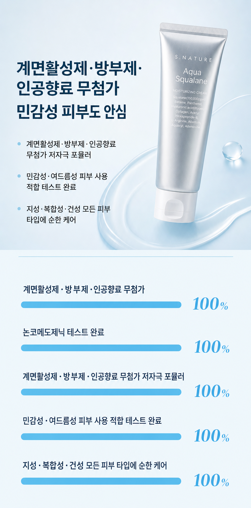
07 주름개선 기능성 화장품 아데노신 함유 안티에이징 ✓ 135.1s
첨부 레퍼런스 (페이로드 image_urls, 순서대로)
프롬프트
Recreate this e-commerce detail SECTION by swapping in a new product — stay FAITHFUL to the preset section's full structure. - FIRST ref = preset section = the exact LAYOUT/TYPOGRAPHY/DECORATION template to replicate. - SECOND ref = product sheet (clean studio shots, multiple colors/angles) = use the appropriate product/color, faithful, no distortion: S.NATURE Aqua Squalane이라고 적힌 은색/메탈릭 그레이 색상의 길쭉하고 납작한 스퀴즈 튜브로, 흰색 캡이 특징인 수분크림 제품입니다. (용기형: 스퀴즈 튜브, 길쭉하고 납작한 원통형). ⭐ FIDELITY: keep EVERY structural element of the preset section. If it has a point/feature grid (포인트 1~4), keep that exact grid count and layout. If it shows the product from multiple angles, show multiple angles. If it has a product-info / spec block, keep that block. If it shows color options, show this product's color variants. Do NOT simplify, omit, merge, or reduce the layout — only swap product, recolor to product palette, and translate text. Template intent: 제품 소개 및 핵심 효능 강조. Layout: 상단에 작은 영문 서브헤드라인과 큰 한글 메인 헤드라인이 좌측 정렬로 배치. 중하단에 모델의 얼굴 클로즈업 이미지가 크게 배치되어 제품 사용 모습을 보여줌. 배경에는 브랜드명이 크게 블러 처리되어 장식 요소로 활용됨.. DESIGN SYSTEM — apply these exact recurring design elements (inherited from preset, recolored to product palette): - Section header: 메인 타이틀은 크고 굵은 핑크/골드 그라데이션 또는 단색 핑크로 중앙 정렬. 서브 섹션 타이틀은 중간에서 큰 크기, 굵은 핑크 또는 검정색으로 좌측 정렬. 효능 타이틀은 둥근 핑크색 배경 칩에 흰색 텍스트로 좌측 정렬. 보조 헤더는 작고 보통 굵기, 검정색으로 좌측 정렬. - Point/bullet marks: 작고 미묘한 연핑크 또는 회색 점/대시를 사용하여 목록의 불릿 포인트로 활용. - Dividers: 주요 콘텐츠 블록 간에는 충분한 수직 여백(흰색 공간)을 주로 사용. 섹션 구분으로 미묘한 배경색 전환(예: 연핑크에서 흰색)도 활용. 명시적인 수평선은 주요 섹션 구분선으로 사용하지 않음. - Fonts: 한글/영문 모두 본문과 대부분의 제목에 깨끗하고 현대적인 산세리프 폰트 사용. 제목은 굵게, 본문은 보통 굵기로 대비. 브랜드명(CHOOSYU)은 독특하고 우아한 스크립트 폰트 사용. 메인 타이틀, 서브 타이틀, 본문 텍스트 간에 크기와 굵기의 명확한 계층 구조를 가짐. - Icon/decoration motifs: 브랜드 로고는 우아한 스크립트 폰트. 배경 장식으로 투명하고 구형의 연핑크/로즈골드 버블 사용. 성분 설명 옆에는 육각형 세포, 피부 질감, 혈액 세포 등 사실적이고 과학적인 스타일의 클로즈업 이미지를 시각 자료로 활용. 뱃지 내부에 작은 별과 같은 최소한의 기능성 아이콘 사용. - Badges/price chips: 제품 효능(예: '미백·주름개선 2중 기능성 화장품') 및 임상 결과(예: '30% 개선') 표기에는 핑크색 배경에 흰색 텍스트를 사용한 원형 뱃지 사용. 백분율은 크고 눈에 띄게 표시. 효능 타이틀(예: '멜라닌 케어')에는 핑크색 배경에 흰색 텍스트를 사용한 직사각형/둥근 모서리 칩 사용. 가격 표시는 없음. - Color application structure (keep this structure, remap to product palette): 콘텐츠 영역은 주로 깨끗한 흰색 배경을 사용하며, 부드러운 연한 분홍색을 히어로 섹션이나 시각적 깊이/구분선 생성에 활용. 주요 강조색은 부드러운 채도 낮은 로즈 핑크로, 메인 타이틀 및 주요 헤더 텍스트, 뱃지/칩 배경, 일부 장식 요소, 미묘한 포인트 마크에 적용. 보조 강조색은 로즈골드/구리 메탈릭 광택으로, 제품 패키징 디테일, 때로는 브랜드 로고 텍스트나 미묘한 그라데이션에 사용. 본문 텍스트는 흰색 배경에서 높은 가독성을 위해 짙은 회색 또는 검정색. 핑크색 배경의 강조 텍스트는 흰색. 브랜드명은 로즈골드 또는 핑크색. 흰색 콘텐츠 블록은 부드러운 핑크색 섹션으로 둘러싸이거나 중간에 삽입되며, 주요 정보와 브랜딩은 핑크색 또는 로즈골드로 강조. STYLE RULES: - LAYOUT/TYPOGRAPHY/DECORATION come from the preset template reference(s) — preserve exact composition, positions, typographic style, motifs. - COLORS come from THIS product — recolor everything to: primary #00A3E0, secondary #E8F7FC, accent #FFD700, dark #1A3A52, light #F5FCFF. Do not keep template colors. - PRODUCT FIDELITY: keep the product's REAL form, container type, proportions, and shape from the product reference. NEVER change the container/form factor (a squeeze tube stays a tube, a pump bottle stays a pump, a jar stays a jar). Do NOT stretch, squash, warp, or distort. Natural proportions, clean. - TEXT: Korean only (브랜드/단위/약어만 영어), zero spelling errors, fully legible. - NO COMMERCE UI: this is a product-INTRODUCTION image only. Absolutely NO buttons, NO "구매하기"/"장바구니"/"수량 선택"/CTA, no cart/quantity/checkout widgets, no price-with-buy-button, no 상품정보 commerce table. The shopping platform renders all purchase UI separately — never draw it. - FULL-BLEED: the design FILLS the ENTIRE frame edge-to-edge. NO white side margins, NO letterbox/pillarbox bars, NO empty padding on left/right or top/bottom. The background color/scene extends to all four edges. - STATIC image. Mobile vertical. QUALITY (this is a FINISHED, polished design — not a placeholder): - ICONS: modern 3D glossy rounded app-style icons (like Toss / premium fintech UI) — soft gradients, subtle long shadows, friendly & premium. NOT flat thin line icons. - SECTION HEADER: properly designed — large bold Korean title + tasteful styled sub-label/accent. Never plain or awkward. - FEATURE / KEY POINT blocks: CLEAN and uncluttered — at most 3-4 short points, generous spacing, minimal text. Do not cram long sentences. - NO EMPTY BOXES: match the number of product cells EXACTLY to the real item/variant count. Never leave empty placeholder boxes (2 products → 2 cells, never 4 with 2 empty). - PRODUCT SCALE: show the product on its own at realistic, natural scale. NEVER show hands/models holding the product. If the template has a hand-held/worn shot, replace it with a clean product-only shot at correct proportions. - NO PRICE: never render any price, discount %, or 원 amount anywhere — pricing changes and is the platform's job. NEW CONTENT (Korean): - Section title: "주름개선 기능성 화장품 아데노신 함유 안티에이징" - Points: "식약처 인정 주름개선 기능성 성분 아데노신 함유", "수분 충전과 동시에 탄력 케어로 건강한 피부 결", "사계절 내내 촉촉함 유지하며 피부 노화 예방" - Exact data (no invented numbers): 주름개선 기능성 화장품 (아데노신 함유) VERBATIM KOREAN TEXT — render each string EXACTLY, crisp and fully legible, zero malformed syllables: • 주름개선 기능성 화장품 아데노신 함유 안티에이징 • 식약처 인정 주름개선 기능성 성분 아데노신 함유 • 수분 충전과 동시에 탄력 케어로 건강한 피부 결 • 사계절 내내 촉촉함 유지하며 피부 노화 예방 • 주름개선 기능성 화장품 (아데노신 함유)
결과
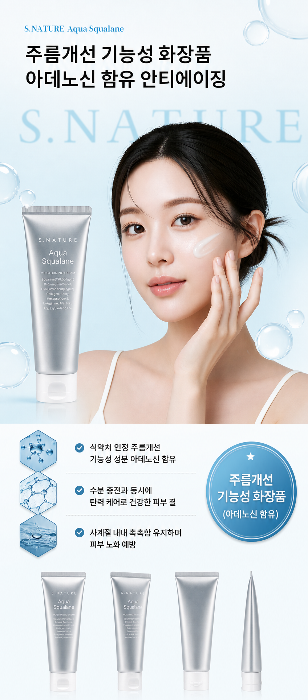
08 1+1 더블기획 60ml × 2개 아침·저녁 넉넉하게 사용 ✓ 101.2s
첨부 레퍼런스 (페이로드 image_urls, 순서대로)
프롬프트
Recreate this e-commerce detail SECTION by swapping in a new product — stay FAITHFUL to the preset section's full structure. - FIRST ref = preset section = the exact LAYOUT/TYPOGRAPHY/DECORATION template to replicate. - SECOND ref = product sheet (clean studio shots, multiple colors/angles) = use the appropriate product/color, faithful, no distortion: S.NATURE Aqua Squalane이라고 적힌 은색/메탈릭 그레이 색상의 길쭉하고 납작한 스퀴즈 튜브로, 흰색 캡이 특징인 수분크림 제품입니다. (용기형: 스퀴즈 튜브, 길쭉하고 납작한 원통형). ⭐ FIDELITY: keep EVERY structural element of the preset section. If it has a point/feature grid (포인트 1~4), keep that exact grid count and layout. If it shows the product from multiple angles, show multiple angles. If it has a product-info / spec block, keep that block. If it shows color options, show this product's color variants. Do NOT simplify, omit, merge, or reduce the layout — only swap product, recolor to product palette, and translate text. Template intent: 제품 소개 및 상세 정보 제공. Layout: 상단에 영문 메인 타이틀, 중단에 제품군 이미지, 하단에 제품 상세 정보(테이블 형식) 배치. 상단과 중단은 흰색 배경, 하단 상세 정보는 연회색 배경.. DESIGN SYSTEM — apply these exact recurring design elements (inherited from preset, recolored to product palette): - Section header: 메인 타이틀은 크고 굵은 핑크/골드 그라데이션 또는 단색 핑크로 중앙 정렬. 서브 섹션 타이틀은 중간에서 큰 크기, 굵은 핑크 또는 검정색으로 좌측 정렬. 효능 타이틀은 둥근 핑크색 배경 칩에 흰색 텍스트로 좌측 정렬. 보조 헤더는 작고 보통 굵기, 검정색으로 좌측 정렬. - Point/bullet marks: 작고 미묘한 연핑크 또는 회색 점/대시를 사용하여 목록의 불릿 포인트로 활용. - Dividers: 주요 콘텐츠 블록 간에는 충분한 수직 여백(흰색 공간)을 주로 사용. 섹션 구분으로 미묘한 배경색 전환(예: 연핑크에서 흰색)도 활용. 명시적인 수평선은 주요 섹션 구분선으로 사용하지 않음. - Fonts: 한글/영문 모두 본문과 대부분의 제목에 깨끗하고 현대적인 산세리프 폰트 사용. 제목은 굵게, 본문은 보통 굵기로 대비. 브랜드명(CHOOSYU)은 독특하고 우아한 스크립트 폰트 사용. 메인 타이틀, 서브 타이틀, 본문 텍스트 간에 크기와 굵기의 명확한 계층 구조를 가짐. - Icon/decoration motifs: 브랜드 로고는 우아한 스크립트 폰트. 배경 장식으로 투명하고 구형의 연핑크/로즈골드 버블 사용. 성분 설명 옆에는 육각형 세포, 피부 질감, 혈액 세포 등 사실적이고 과학적인 스타일의 클로즈업 이미지를 시각 자료로 활용. 뱃지 내부에 작은 별과 같은 최소한의 기능성 아이콘 사용. - Badges/price chips: 제품 효능(예: '미백·주름개선 2중 기능성 화장품') 및 임상 결과(예: '30% 개선') 표기에는 핑크색 배경에 흰색 텍스트를 사용한 원형 뱃지 사용. 백분율은 크고 눈에 띄게 표시. 효능 타이틀(예: '멜라닌 케어')에는 핑크색 배경에 흰색 텍스트를 사용한 직사각형/둥근 모서리 칩 사용. 가격 표시는 없음. - Color application structure (keep this structure, remap to product palette): 콘텐츠 영역은 주로 깨끗한 흰색 배경을 사용하며, 부드러운 연한 분홍색을 히어로 섹션이나 시각적 깊이/구분선 생성에 활용. 주요 강조색은 부드러운 채도 낮은 로즈 핑크로, 메인 타이틀 및 주요 헤더 텍스트, 뱃지/칩 배경, 일부 장식 요소, 미묘한 포인트 마크에 적용. 보조 강조색은 로즈골드/구리 메탈릭 광택으로, 제품 패키징 디테일, 때로는 브랜드 로고 텍스트나 미묘한 그라데이션에 사용. 본문 텍스트는 흰색 배경에서 높은 가독성을 위해 짙은 회색 또는 검정색. 핑크색 배경의 강조 텍스트는 흰색. 브랜드명은 로즈골드 또는 핑크색. 흰색 콘텐츠 블록은 부드러운 핑크색 섹션으로 둘러싸이거나 중간에 삽입되며, 주요 정보와 브랜딩은 핑크색 또는 로즈골드로 강조. STYLE RULES: - LAYOUT/TYPOGRAPHY/DECORATION come from the preset template reference(s) — preserve exact composition, positions, typographic style, motifs. - COLORS come from THIS product — recolor everything to: primary #00A3E0, secondary #E8F7FC, accent #FFD700, dark #1A3A52, light #F5FCFF. Do not keep template colors. - PRODUCT FIDELITY: keep the product's REAL form, container type, proportions, and shape from the product reference. NEVER change the container/form factor (a squeeze tube stays a tube, a pump bottle stays a pump, a jar stays a jar). Do NOT stretch, squash, warp, or distort. Natural proportions, clean. - TEXT: Korean only (브랜드/단위/약어만 영어), zero spelling errors, fully legible. - NO COMMERCE UI: this is a product-INTRODUCTION image only. Absolutely NO buttons, NO "구매하기"/"장바구니"/"수량 선택"/CTA, no cart/quantity/checkout widgets, no price-with-buy-button, no 상품정보 commerce table. The shopping platform renders all purchase UI separately — never draw it. - FULL-BLEED: the design FILLS the ENTIRE frame edge-to-edge. NO white side margins, NO letterbox/pillarbox bars, NO empty padding on left/right or top/bottom. The background color/scene extends to all four edges. - STATIC image. Mobile vertical. QUALITY (this is a FINISHED, polished design — not a placeholder): - ICONS: modern 3D glossy rounded app-style icons (like Toss / premium fintech UI) — soft gradients, subtle long shadows, friendly & premium. NOT flat thin line icons. - SECTION HEADER: properly designed — large bold Korean title + tasteful styled sub-label/accent. Never plain or awkward. - FEATURE / KEY POINT blocks: CLEAN and uncluttered — at most 3-4 short points, generous spacing, minimal text. Do not cram long sentences. - NO EMPTY BOXES: match the number of product cells EXACTLY to the real item/variant count. Never leave empty placeholder boxes (2 products → 2 cells, never 4 with 2 empty). - PRODUCT SCALE: show the product on its own at realistic, natural scale. NEVER show hands/models holding the product. If the template has a hand-held/worn shot, replace it with a clean product-only shot at correct proportions. - NO PRICE: never render any price, discount %, or 원 amount anywhere — pricing changes and is the platform's job. NEW CONTENT (Korean): - Section title: "1+1 더블기획 60ml × 2개 아침·저녁 넉넉하게 사용" - Points: "60ml 대용량 × 2개 구성으로 가성비 우수", "아침 메이크업 베이스 + 저녁 스킨케어 마무리 단계 활용", "화이트 톤 원형 저그 용기로 깔끔한 욕실 인테리어" - Exact data (no invented numbers): 1+1 더블기획 / 60ml × 2개 / 화이트 톤 원형 저그 용기 VERBATIM KOREAN TEXT — render each string EXACTLY, crisp and fully legible, zero malformed syllables: • 1+1 더블기획 60ml × 2개 아침·저녁 넉넉하게 사용 • 60ml 대용량 × 2개 구성으로 가성비 우수 • 아침 메이크업 베이스 + 저녁 스킨케어 마무리 단계 활용 • 화이트 톤 원형 저그 용기로 깔끔한 욕실 인테리어 • 1+1 더블기획 / 60ml × 2개 / 화이트 톤 원형 저그 용기
결과
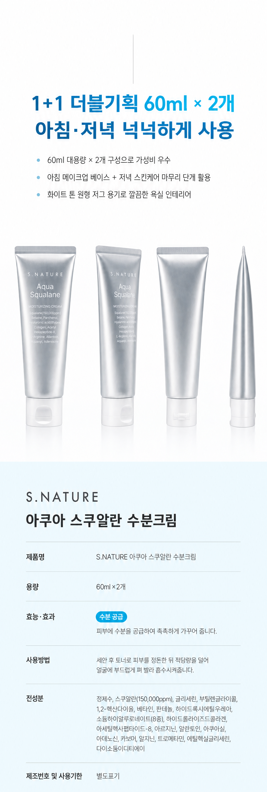
🖼️ 시안 비교 — 좌: 원본 / 우: 생성 (스크롤 동기화)
📄 원본 (상세이미지 36장)


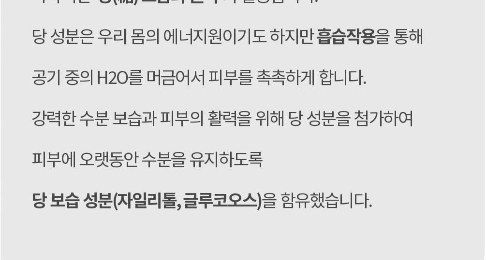
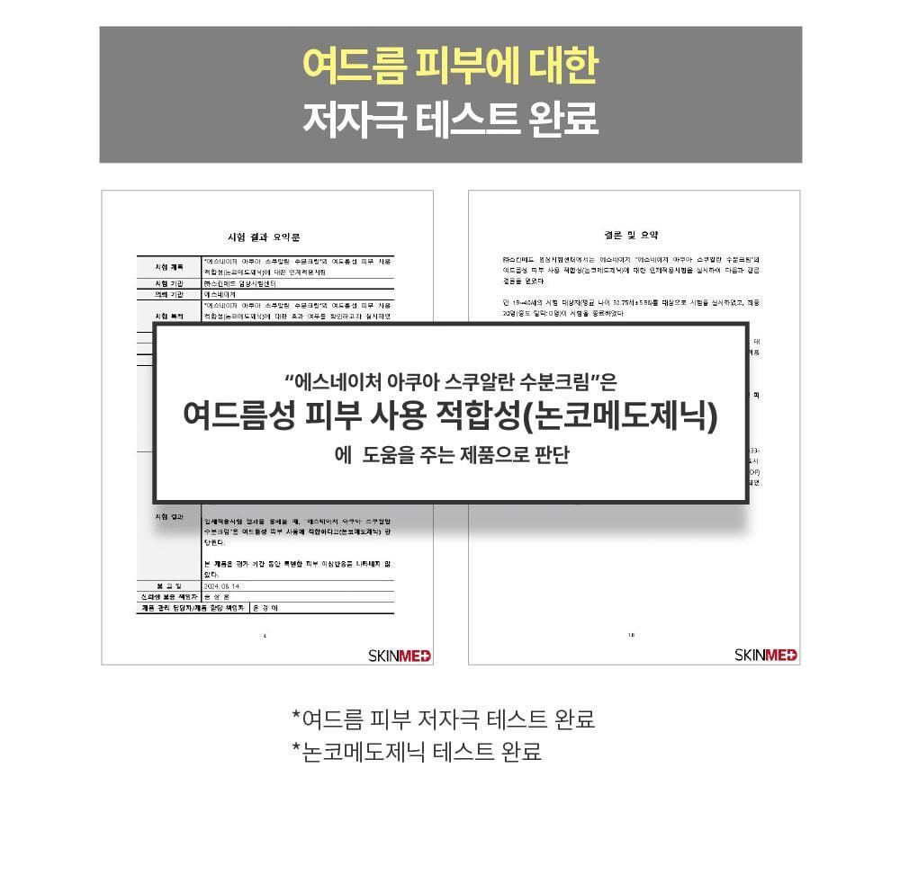

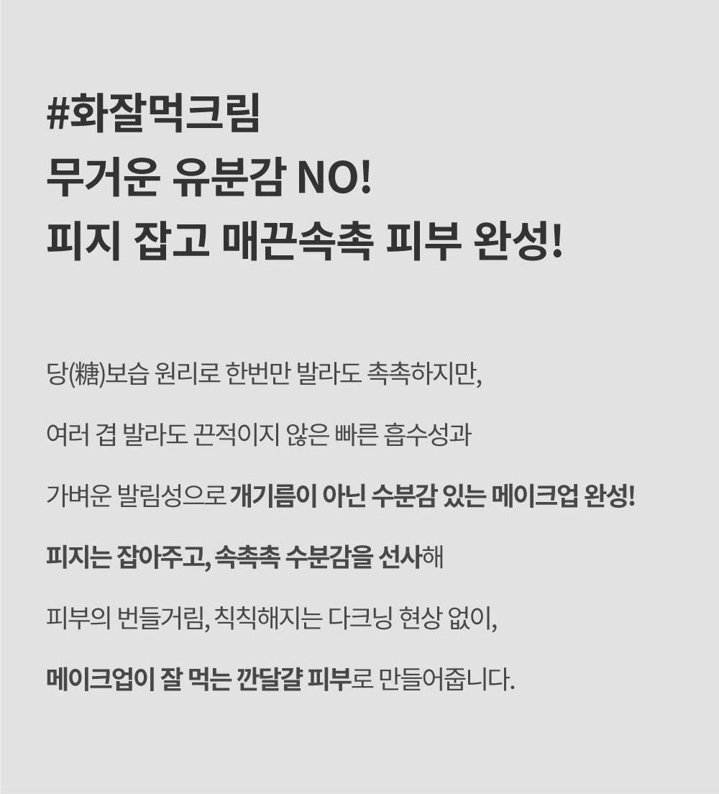

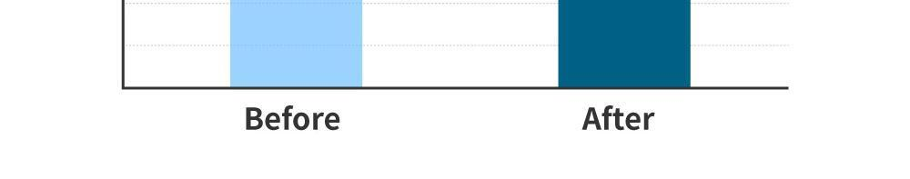
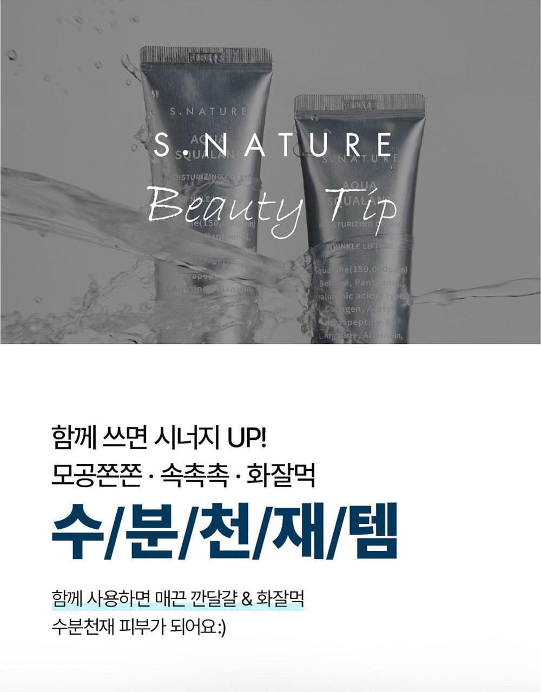

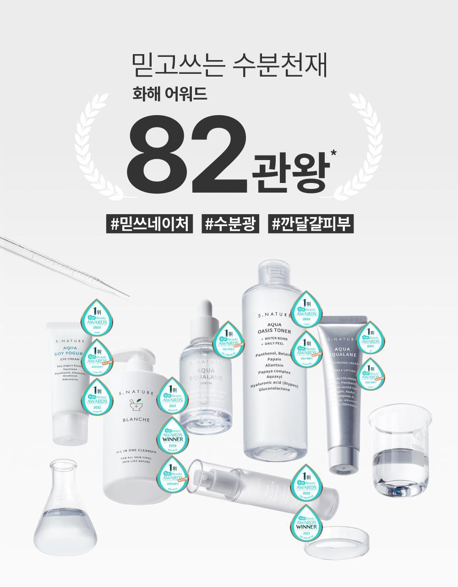
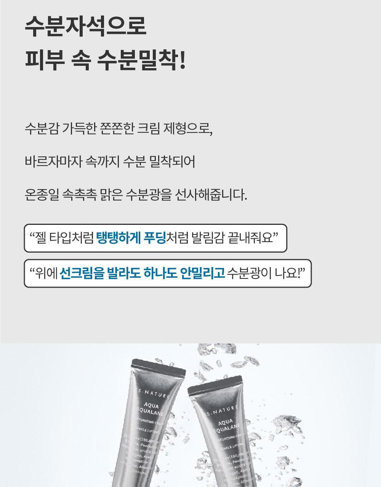
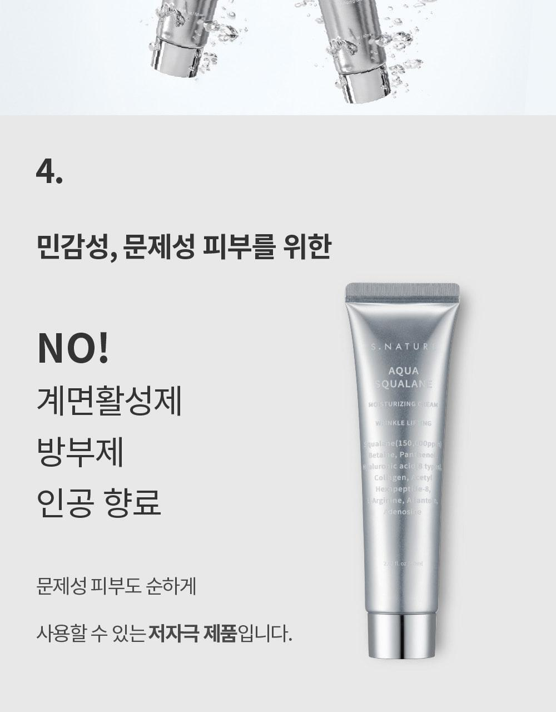

✨ 우리 생성 (v9 · 커버+섹션 8)